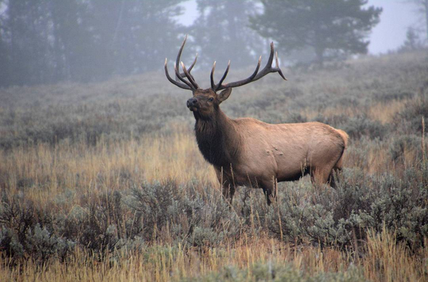

The Rocky Mountain Elk Foundation
Ensuring the future of elk, other wildlife, their habitat, and our hunting heritage
The Rocky Mountain Elk Foundation believes that Hunting Is Conservation. Early American leaders like Theodore Roosevelt shaped a set of ideals now known as the North American Model of Wildlife Conservation. They declared that wildlife belong to all of us. That every citizen is entitled to hunt and fish. And that science-based, state-regulated hunting would drive wildlife conservation and management. Today, the U.S. has the most successful system in the world. And no one does more to uphold it than hunters.